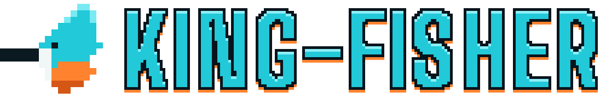

Bondi Beach · freediving + spearo conditions
Demo runs on baked-in sample data so you can see the app work. For live readings, point it at your WillyWeather proxy (a 15-line serverless function — your API key stays server-side, never in this page).